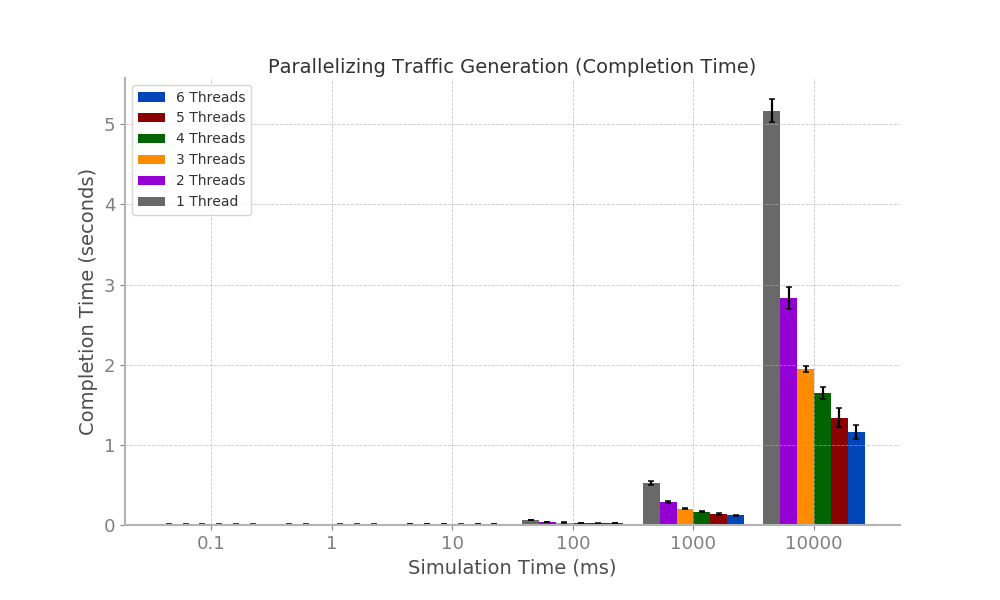
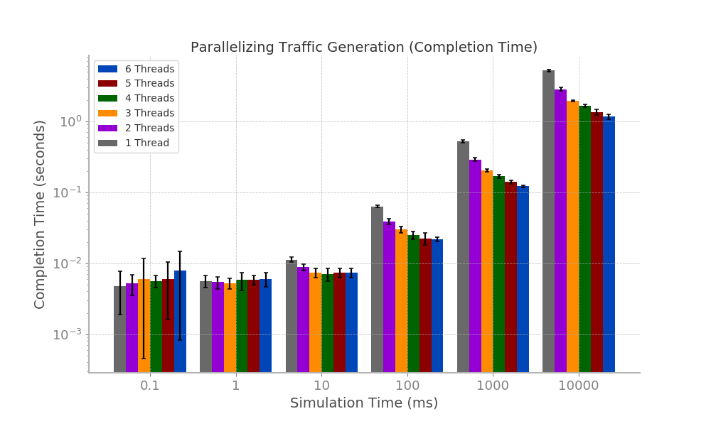
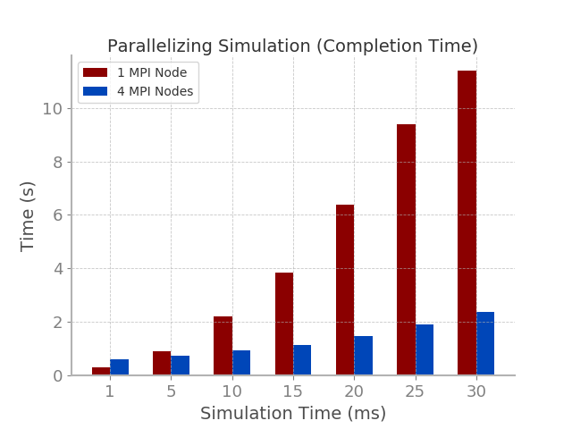
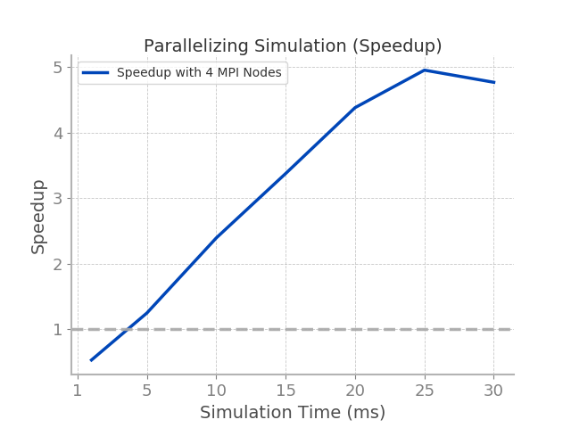

Results
Traffic Generation
We used OpenMP to parallelize the traffic generation code on an increasing amount of threads
alongside an increasing amount of flow sizes to be generated. These flow sizes increased in a
exponential manner from 0.1 to 1 and eventually to 10000.
Bar plots for the traffic generation phases can be found below (left is on a linear scale
and right is on a logarithmic scale). Furthermore, these bar plots display the error margins.

From the data, it is evident that paralleization of the traffic generation provided little to no improvement
when the flow size to be generated is 0.1. Furthermore, the improvements that results from the parallelization
of flow size generation of sizes 1, 10, and 100 are minor and are only visible on a logarithmic scale. Greater
improvements from paralleization result from flow size generation greater that 100 (i.e. 1000 and 10,000).
Furthermore, it can be seen that in most cases more threads improves completion time. The exceptions to this
are when flow sizes are 0.1, 1, and even 10 (when increasing from 4 to 5 threads), although the deviations are
minor in scale.
To better visualize the speedup with an increasing number of threads, we plotted the speedup from an increasing
number of threads alongside an increasing flow size.
From the line plot, speedup with 1 thread is constant, as it should be. Furthermore, speedup increases alongside
an increasing number of threads (although it should be noted that speedup is relatively the same for any number of
threads when flow size is less than or equal to 10). The rate of speedup growth is higher for runs with more threads. Finally,
the rate of speedup growth seems to approach zero for flow sizes above 1000.
Network Simulation
We used MPI to parallelize the network simulation code on 1 MPI node and 4 MPI nodes for increasing sizes of flows that were
generated in the Traffic Generation aspect of our code.
Bar plots for the network simulation phase can be found below.

From the bar plot, it is evident that, in most cases, parallelization with MPI significantly improves the completion time of the
simulation. The exceptions for this are when the flow size is 1, where completion time of the parallelized run is slower, and
when the flow size is 5, where the completion time of the parallelized run is only slightly faster.
To better visualize the speedup with more MPI nodes, we plotted the speedup from using 4 MPI nodes
alongside increasing flow size.

From the line plot above, it can be seen that speedup grows linearly with problem size but declines slightly
with flow sizes greater than 25. It should also be noted that for flow sizes between 1 and 5, speedup is less
than one, meaning that the parallel version is slower than the serial version.